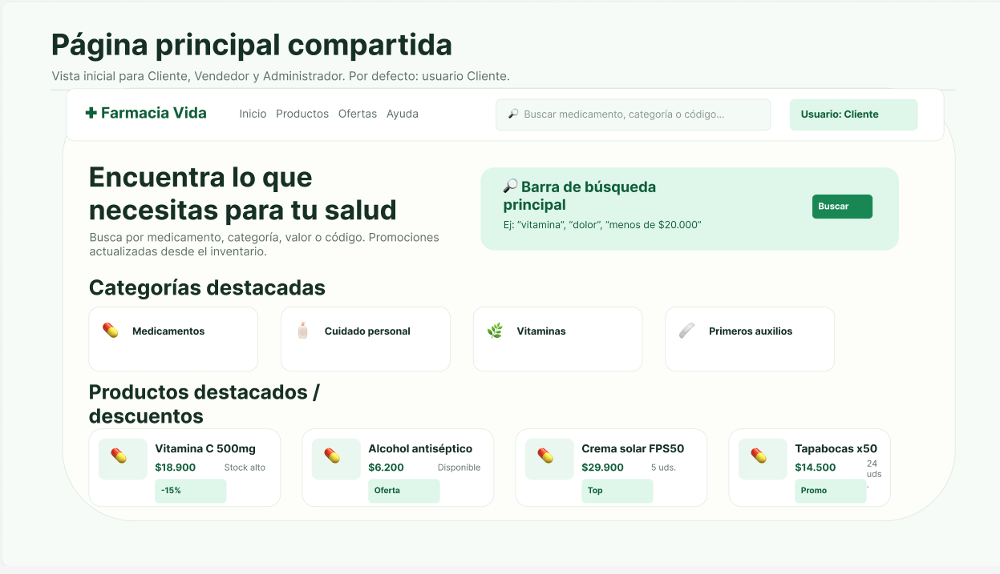

Alertas automáticas
Recibe notificaciones cuando un medicamento está próximo a agotarse o vencer.
MicroERP centraliza la operación diaria para reducir errores en tu farmacia.

Recibe notificaciones cuando un medicamento está próximo a agotarse o vencer.
Es un sistema para gestionar inventarios y ventas en farmacias pequeñas.
CerrarNo, funciona 100% en la nube a través de tu navegador web.
Cerrar